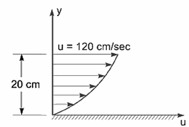

💧 Module 1: Fluid Statics — Complete Study Guide
📑 Topics
- Continuum Concept 2 marks
- Fluid Properties (Density, Viscosity, Surface Tension, Vapor Pressure) 3–5 marks
- Pressure & Pascal's Law 2–3 marks
- Total Pressure on Plane Surfaces 5 marks
- Center of Pressure 5–7 marks
- Buoyancy, Archimedes' Principle & Metacentre 5 marks
- Pressure Measurement (Piezometer, Manometers, Gauges) 5 marks
- Stream Lines, Flow Types & Continuity 2–5 marks
- Quick Revision Cheat Sheet
1. Continuum Concept (§1.1–1.3)
📝 Theory Notes
- Real fluids are molecular, but we treat them as continuum when studying macroscopic behaviour.
- Assumption valid when characteristic length (e.g. pipe diameter) >> mean free path of molecules.
- Physical properties (ρ, μ, σ) are treated as continuous, NOT discrete.
📘 Worked Example (Bansal §1.1–1.3)
Illustrative Problem 1.1 (adapted): Explain why continuum assumption fails at very low pressures (high vacuum).
✏️ Book Practice Questions
What is the continuum concept? Why is it necessary in fluid mechanics?
Continuum concept assumes fluid properties (density, viscosity, etc.) vary continuously from point to point, ignoring molecular discontinuity. It is necessary because:
- It allows use of differential calculus in fluid mechanics.
- It simplifies analysis of macroscopic behaviour without tracking individual molecules.
- It is valid when the system size is much larger than mean free path (~10⁻⁷ m for air at STP).
🎓 BIT Mesra PYQs
| Year | Paper | Q.No. | Marks | Question |
|---|---|---|---|---|
| MO2025 | MID | Q.1(a) | 2 | Discuss the concept of continuum. |
| MO2024 P1 | MID | Q.1(a) | 2 | What does continuum signify? |
| MO2023 | MID | Q.1(a) | 2 | Continuum concept — explain with justification. |
| MO2022 | END | Q.1(a) | 2 | Definition and types of fluids (short note). |
2. Fluid Properties (§1.4–1.6, §1.7–1.8, §1.9)
📝 Theory Notes
Density, Specific Weight, Specific Gravity
| Property | Symbol | SI Unit | Formula |
|---|---|---|---|
| Mass density | ρ | kg/m³ | ρ = m/V |
| Specific weight | γ | N/m³ | γ = ρg |
| Specific gravity | S | dimensionless | S = ρ/ρ_water (ρ_water = 1000 kg/m³) |
Newton's Law of Viscosity CRITICAL
- τ = shear stress (N/m²)
- μ = dynamic viscosity (N·s/m² or Pa·s)
- du/dy = velocity gradient (rate of strain, s⁻¹)
Kinematic viscosity:
Surface Tension & Capillarity
- σ = surface tension (N/m)
- θ = angle of contact (water-glass ≈ 0°, mercury-glass ≈ 130°)
- d = tube diameter (m)
- Water rises in glass; mercury is depressed.
Vapor Pressure & Cavitation
- Vapor pressure: pressure at which liquid starts boiling at given temperature.
- Cavitation: Formation of vapor bubbles in regions where local pressure < vapor pressure. Bubbles collapse violently → damage to surfaces.
📘 Worked Example (Bansal §1.5)
Problem: A plate of thickness 0.05 m moves at 0.8 m/s over a fixed plate with 0.01 m gap. Force per unit area required is 3 N/m². Find dynamic viscosity μ.
✏️ Book Practice Questions
Find the kinematic viscosity of a liquid if its dynamic viscosity is 0.08 Pa·s and density is 850 kg/m³.
Compare capillary rise in a 4 mm glass tube for water (σ=0.0725 N/m, θ≈0°) and mercury (σ=0.52 N/m, θ=130°, SG=13.6).
🎓 BIT Mesra PYQs
| Year | Paper | Q.No. | Marks | Topic |
|---|---|---|---|---|
| MO2025 | MID | Q.1(b) | 3 | Viscosity: plate sliding problem |
| MO2024 P1 | MID | Q.1(b) | 3 | SG, density calculations |
| MO2023 | MID | Q.1(b) | 3 | Capillary rise numerical |
| MO2022 | END | Q.1(b) | 3 | Surface tension & viscosity definitions |
3. Pressure & Pascal's Law (§2.1–2.3)
📝 Theory Notes
Pascal's Law: Pressure at any point in a static fluid is equal in all directions.
Pressure Units
| Unit | Symbol | Conversion |
|---|---|---|
| Pascal | Pa | 1 Pa = 1 N/m² |
| Bar | bar | 1 bar = 10⁵ Pa |
| Atmosphere | atm | 1 atm = 101325 Pa = 10.33 m water |
| mm of Hg | mmHg | 1 mmHg = 133 Pa |
📘 Worked Example (Bansal §2.2)
Problem: Find pressure at 8 m depth in water (ρ = 1000 kg/m³). Also express in bar and atm.
✏️ Book Practice Questions
Define pressure head. A tank contains water to a depth of 5 m. Find pressure at bottom in kPa.
🎓 BIT Mesra PYQs
| Year | Paper | Q.No. | Marks | Topic |
|---|---|---|---|---|
| MO2025 | MID | Q.2(a) | 2 | Pascal's Law statement |
| MO2024 P1 | MID | Q.2(a) | 2 | Pressure and pressure head |
4. Total Pressure on Plane Surfaces (§2.4)
📝 Theory Notes
- P = total pressure force (N)
- A = area of surface (m²)
- h̄ = depth of centroid from free surface (m)
📘 Worked Example (Bansal §2.4)
Problem: A vertical rectangular plate 2 m wide × 3 m deep has its top edge at free surface of water. Find total pressure and its position.
✏️ Book Practice Questions
Find total pressure on a vertical rectangular surface 3 m wide × 4 m deep, top edge 1 m below free surface. Water on one side.
🎓 BIT Mesra PYQs
| Year | Paper | Q.No. | Marks | Question |
|---|---|---|---|---|
| MO2025 | MID | Q.2(b) | 3 | Rectangular plate: total pressure + CP |
| MO2023 | MID | Q.2(a) | 5 | Inclined plane surface pressure |
5. Center of Pressure (§2.5)
📝 Theory Notes
- h* = depth of center of pressure from free surface
- I_G = moment of inertia of area about centroidal axis
- A = total area
- h̄ = centroid depth
Key shapes:
| Shape | I_G about horizontal axis through CG |
|---|---|
| Rectangle (b × d) | bd³/12 |
| Circle (dia D) | πD⁴/64 |
| Triangle (base b, height h) | bh³/36 |
📘 Worked Examples
Example 1 — Circular Plate (MO2025 END Q1(a))
Example 2 — Rectangular Surface (MO2025 MID Q2(b))
✏️ Book Practice Questions
Find total pressure and center of pressure on a circular plate of diameter 1.2 m with its center 2 m below water surface.
🎓 BIT Mesra PYQs
| Year | Paper | Q.No. | Marks | Question |
|---|---|---|---|---|
| MO2025 | END | Q.1(a) | 5 | Circular plate: total pressure + CP |
| MO2025 | MID | Q.2(b) | 3 | Rectangular plate: total pressure + CP |
| MO2024 P1 | MID | Q.2(b) | 5 | Rectangular plate DP + CP |
6. Buoyancy, Archimedes' Principle & Metacentre (§2.6–2.7)
📝 Theory Notes
- Direction: Vertically upward through center of buoyancy (B).
- Equilibrium conditions:
| Condition | Meaning |
|---|---|
| M above CG | Stable equilibrium |
| M at CG | Neutral equilibrium |
| M below CG | Unstable equilibrium |
Metacentric Height CRITICAL
- I_O = moment of inertia of water-plane area about axis
- V = submerged volume
- BG = distance between center of buoyancy and CG of body
📘 Worked Example (Bansal §2.6)
Problem: A rectangular barge 10 m × 4 m floats in water. Draft is 1.5 m. CG is 1.2 m above keel. Find GM and state stability.
✏️ Book Practice Questions
A rectangular pontoon 12 m × 6 m floats in seawater (SG=1.025) with draft 2 m. If CG is 1.5 m above keel, calculate GM.
🎓 BIT Mesra PYQs
| Year | Paper | Q.No. | Marks | Question |
|---|---|---|---|---|
| MO2024 P2 | END | Q.3(a) | 5 | Metacentre for rectangular barge |
| MO2024 P1 | END | Q.3(a) | 5 | Buoyancy + stability |
7. Pressure Measurement (§2.8–2.12)
📝 Theory Notes
Piezometer Tube
- Open tube connected to point where pressure is measured.
- Cannot measure negative (vacuum) pressure or gas pressure.
U-Tube Manometer CRITICAL
Simplified forms:
Differential U-Tube Manometer CRITICAL
Key technique: Trace levels from A to B through manometer.
- Add pressure when going down, subtract when going up.
- Add ρ_m·g·h when descending INTO manometer fluid.
- Add ρ·g·h when descending into fluid in pipe.
Inverted U-Tube Manometer
- Used when pressure difference is small.
- Manometer fluid is lighter than pipe fluids (usually oil, SG=0.8).
GAUGE vs ABSOLUTE Pressure
📘 Worked Example (Bansal §2.9)
Problem: Pipe A (water, ρ=1000) and Pipe B (water) connected by differential U-tube with mercury (ρ_m=13600). Height difference h=0.15 m. Find pressure difference.
✏️ Book Practice Questions
Pressure in pipe A (water) is measured with mercury manometer. Height difference = 200 mm. Find pressure in A.
Inverted U-tube manometer with oil (SG=0.8) connects two water pipes. h = 0.12 m. Find pressure difference.
🎓 BIT Mesra PYQs
| Year | Paper | Q.No. | Marks | Question |
|---|---|---|---|---|
| MO2025 | MID | Q.2(a) | 2 | Piezometer & differential U-tube (describe with sketch) |
| MO2025 | END | Q.1(b) | 5 | Single column manometer: SG=0.9, reservoir 100× tube area |
| MO2023 | MID | Q.2(a) | 5 | Differential U-tube numerical |
| MO2023 | MID | Q.2(b) | 3 | Inverted U-tube, oil SG=0.8 |
| MO2024 P1 | MID | Q.2(a) | 5 | Differential manometer: two pipes at different elevations |
PYQ images:



8. Stream Lines, Flow Types & Continuity
📝 Theory Notes
| Concept | Definition | Property |
|---|---|---|
| Stream line | Line tangent to velocity vector at every point | No flow across |
| Path line | Actual path traced by a fluid particle | Time history |
| Streak line | Line joining all particles passed through a point | Lagrangian view |
Types of Flow
| Type | Definition |
|---|---|
| Steady / Unsteady | Properties constant / varying with time at a point |
| Uniform / Non-uniform | Properties same / different at different points at same time |
| 1D / 2D / 3D | Variation in 1 / 2 / 3 directions |
| Laminar / Turbulent | Smooth / chaotic; Re < 2000 / Re > 4000 |
| Rotational / Irrotational | Vorticity ≠ 0 / = 0 (curl V = 0) |
Continuity Equation (Differential Form)
📘 Worked Example (Bansal §1.9)
Problem: 2D flow has u = 2x, v = −2y. Check continuity and rotationality.
✏️ Book Practice Questions
Distinguish between steady and unsteady flow with examples.
Steady flow: properties do not change with time at any point. Example: flow in a pipe with constant inlet conditions.
Unsteady flow: properties vary with time. Example: flow in a pipe with varying inlet velocity, tidal flows.
🎓 BIT Mesra PYQs
| Year | Paper | Q.No. | Marks | Question |
|---|---|---|---|---|
| MO2025 | MID | Q.3(a) | 2 | Steady vs unsteady; 1D/2D/3D flow |
| MO2024 P1 | MID | Q.3(a) | 2 | Types of flow classification |
| MO2022 | MID | Q.3(a) | 2 | Derive continuity eq. for 2D |
⚡ Quick Revision Cheat Sheet — Fluid Statics Module 1
Must-Know Formulas
Common Traps
- In manometer problems: always add when going down, subtract when going up.
- For rectangular plate with top edge at free surface: h* = 2h/3.
- Metacentre: GM > 0 → stable; GM = 0 → neutral; GM < 0 → unstable.
- Capillary rise: negative sign means depression (mercury).
- Absolute pressure = gauge + atmospheric. Don't forget p_atm = 10.33 m water.
Weightage Summary
| Topic | Marks/Paper | Frequency |
|---|---|---|
| Center of Pressure | 5–7 | Every paper |
| Buoyancy & Metacentre | 5 | 80% papers |
| Manometers | 5 | Every paper |
| Viscosity | 3 | 90% papers |
| Continuum | 2 | 100% mids |